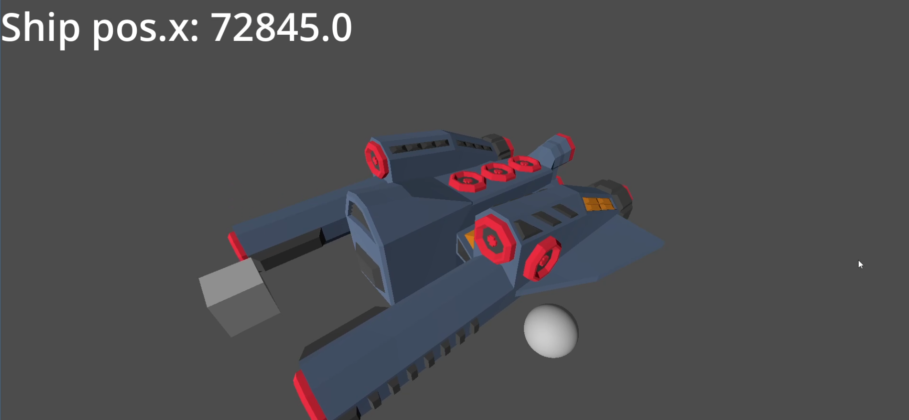
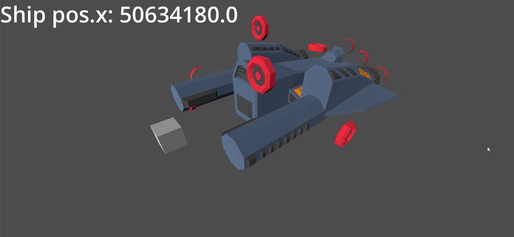
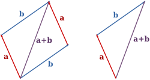
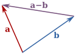
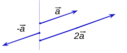
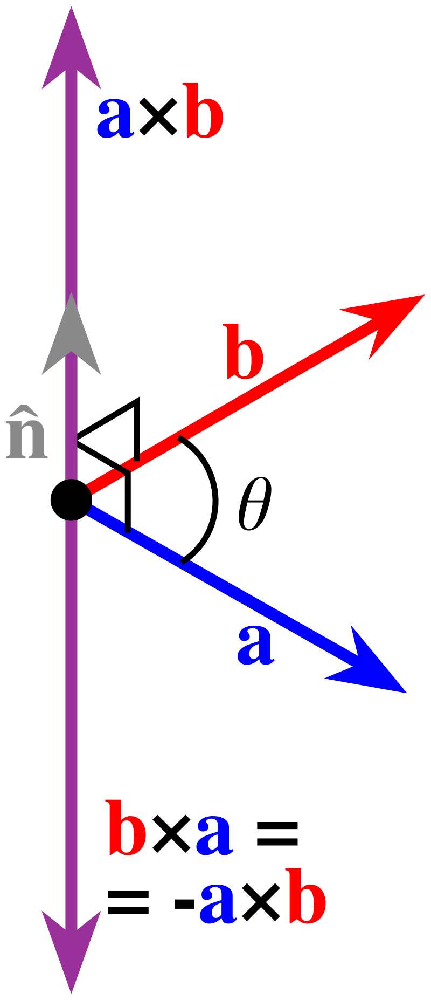
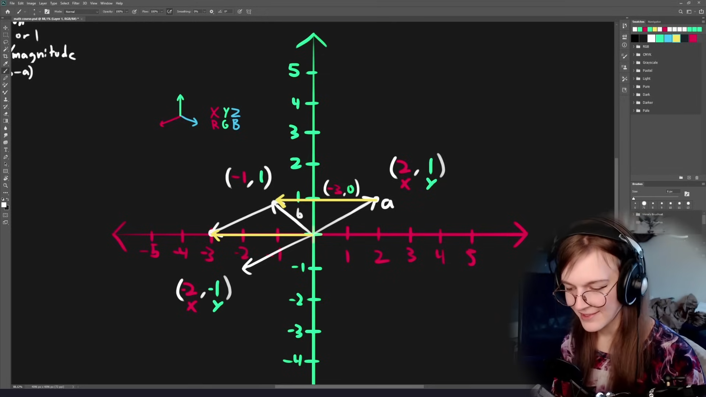

Yannik Brändle - SoSe26
TH Bingen
Node liefert FunktionalitätRessource ist ein Datencontainerunique machen
.tres benutzen?(Epilepsiewarnung: Nächste Folie enhtält rapides blinken)
(Epilepsiewarnung: Diese Folie enhtält rapides blinken)

Bei "nur" 72km

Bei 500.000km
float hat eine begrenzte AuflösungOuter Wilds:) Welt bewegen und nicht den
Spieler
double precision compilen,
verschiebt Problem aber nur
Problem: Rigidbody Clipped durch andere Collider bei hohen geschwindigkeiten
Lösung: CCD (Continous Collision Detection)
pannenkoek2012: A Press Challenge SM64 - Watch for Rolling Rocks: https://youtu.be/kpk2tdsPh0A
Bewegung in Richtung "Forward" (Vector2.UP)
func _physics_process(delta):
position.y += -60 * delta
rotation += 1 * delta
↓
Bewegung in lokale UP Richtung
func _physics_process(delta):
position += transform.y * -60 * delta
rotation += 1 * delta
In 3D sehr ähnlich mit der basis:
position += -transform.basis.z * 60 * delta
Spiel: Baloon Bonanza
Wo ist der Gegner wenn das Geschoss ankommt?
Ansatz:
func calculate_lead_aim(from: Vector3, bullet_speed: float, iterations: int = 1) -> Vector3:
assert(target != null)
var target_position = target.global_position
for i in range(iterations):
var distance = from.distance_to(target_position)
var time = distance / bullet_speed
var target_progress = target.progress + target.settings.speed * time * target.speed_mult
# check if target is overflowing the path
if target_progress > target.parent_path.curve.get_baked_length():
target_progress = target.parent_path.curve.get_baked_length()
target_position = target.parent_path.curve.sample_baked(target_progress)
↷ + target.parent_path.global_position
# t_cl.global_position = target_position
return target_position
Freye Holmér - The Beauty of Bézier Curves: https://youtu.be/aVwxzDHniEw
Freye Holmér - The Beauty of Bézier Curves: https://youtu.be/aVwxzDHniEw
Lösung für Flugbahnberechnung:
Vector3.UP verschieben
func shoot_bomb(target_pos: Vector3, tof: float, damage: float):
var bomb = bullet.instantiate() as Bomb
get_parent().add_child(bomb)
bomb.global_position = cannon_node.global_position
var p1 = cannon_node.global_position
var p4 = target_pos
var dist = p1.distance_to(p4)
var p2 = (p1+(p4-p1)*0.25)
p2.y += dist*0.5
var p3 = (p1+(p4-p1)*0.75)
p3.y += dist*0.5
bomb.shoot(p1, p2, p3, p4, tof, damage)
Folgende Bilder von Wikipedia (english) von
Euclidean Vector
Frage: Zwei Vektoren addieren?
Antwort: $\vec{a} + \vec{b} = \vec{c}$
In Godot: vecc = veca + vecb

Frage: Richtung und Distanz von A nach B?
Antwort: $\vec{a} - \vec{b} = \vec{c}$
In Godot: vecc = veca - vecb

Frage: Einen Vektor mit einem Skalar skalieren?
Antwort: $k \cdot \vec{v} = \vec{w}$
In Godot: myvec * 5

Frage: Die Länge eines Vektors berechnen?
Antwort: $|\vec{v}| = \sqrt{v_x^2 + v_y^2 + v_z^2}$
In Godot: myvec.length()
(Oder myvec.length_squared() bei Vergleichen für
Performance)
Frage: Einen Vektor in einen Einheitsvektor umwandeln?
Antwort: $\hat{v} = \frac{\vec{v}}{|\vec{v}|}$
In Godot: myvec.normalized()
Frage: Den Winkel zwischen zwei Vektoren berechnen?
Antwort: $\vec{a} \cdot \vec{b} = |\vec{a}||\vec{b}|\cos\theta \quad \Rightarrow \quad \theta = \cos^{-1}\left(\frac{\vec{a} \cdot \vec{b}}{|\vec{a}||\vec{b}|}\right)$
In Godot: angle = vecA.angle_to(vecB)
(Dot product!)
Frage: Einen Vektor finden, der senkrecht zu zwei gegebenen
Vektoren im 3D-Raum ist? (Stichwort: normal)
Antwort: $\vec{a} \times \vec{b} = \vec{n}$
In Godot: normal = vecA.cross(vecB)

Empfehlung als Mathe refresher wenn sinnvoll:

Freya Holmér - Vectors & Dot Product • Math for Game Devs [Part 1] https://youtu.be/MOYiVLEnhrw
Achtung: 3h lang, aber gut erklärt